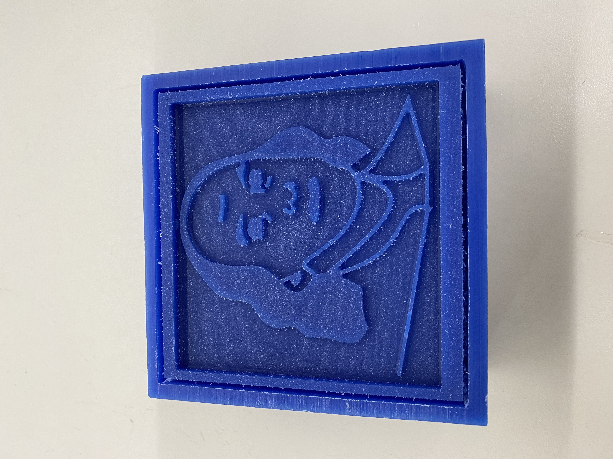
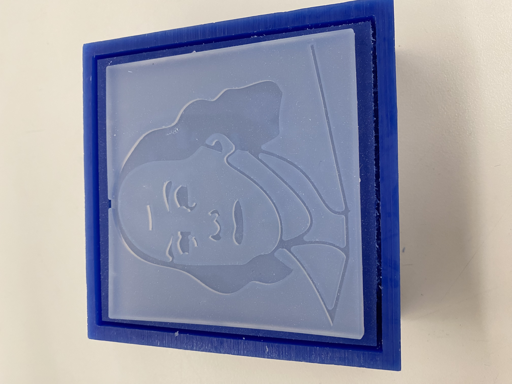

<div class="textcontainer">
<p class="margin"> </p>
<h3>Week 4.2: CNC Milling</h3>
<h4>Assignment: Make Something With CNC</h4>
For this assignment, I decided to utilized the SRM-20 for its 2.5D capabilities. In order to experience a moderately complex project, I traced Ben Franklin in Fusion and then created the wax mold in the SRM-20 with the 1/8 drill bit for the roughing pass and 1/16 drill bit for the fine adjustments. Thereafter, I poured 1:1 silicon apoxy into the wax mold and let it set overnight.
<br>
<br>
An unforseen issue in this project was scaling Ben Franklin to not only fit the wax mold, but to also ensure that the milling would not drill pieces off during the process. Originially, I had Ben's eyebrows, ears, neckline, etc in a 0.01 mm thickness—since that's what looked best in fusion. However, after consulting with the TA's, I came to the understanding that what looks good in fusion doesn't necessarily translate over into a machine. As a result, I had to trace Ben Franklin twice to enlarge the image. On the other hand, I am now more comfortable using the fit point spline feature in Fusion. Humorously, it was only after the second trace that I discovered the scale feature in Fusion—which allowed a precise fit to the wax mold.
<br>
<br>
Below are the results of the project. As you can see, the trace to wax mold translation worked well overall but an adjustment could be made for the eyes moving forward. The bottom left picture shows the final product of the silicon mold that was set overnight. In general, it was easier than expected to remove the silicon mold from the wax mold—aside from removing the border, which were stuck inside of the wax.
<p class="margin"> </p>
<div class="center-colum">
<img src="./Ben Franklin.jpeg" alt="Incubator" width="500">


</div>